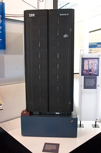
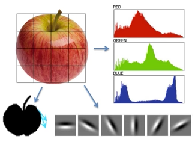

第一章 引言
- 本书面向的读者
- 深度学习的历史趋势
引言
- 人工智能(AI), 创造能自主思考的机器
- 早期AI
-
利用形式化的数学规则描述的问题
- 计算机很容易完成
- 对人类困难
-
Deep Blue, IBM, 1997
- 基于规则的国际象棋系统
- 64个位置，32个棋子，移动规则

- 早期AI的挑战
-
人类容易执行，很难形式化描述的任务
- 直觉、经验
- 从经验获取知识（规则）
- 解决方案1，基于知识的方法
-
知识工程
- 形式化编码知识
- 建立计算机能读懂的百科全书
-
Cyc项目
- openCyc，CycL语言
- Concepts: >630k
- Types of relationships among these concepts: >38k types
- assertions about these concepts: >7M

- 缺陷：
- 手动添加
- 扩展性差
- ……
- 解决方案2，机器学习
- 使AI系统具备自己获取知识的能力
- 从原始数据提取模式（特征）
- 性能依赖于原始数据的表示（Representation）
人工提取特征
- 语音
- 图像 
特征工程

机器学习除了学习特征到输出的映射，能否学习原始数据的特征
表示学习(Representation Learning)
- 学习如何表示原始数据
-
自编码器(Auto-Encoder)
- 判断原始数据与重构数据是否相似
变化因素(Factor of Variation)
- 使物体变化的直接、间接的因素
- 多且错综复杂
- 化繁为简
不恰当的例子

直接法
间接法

“由俭入奢”，Layer Based！
深度学习(Deep Learning)
- 表示学习的一种
- 学习简单特征
- 简单特征刻画复杂特征
- 层次化
- 多层感知器（MLP）
深度学习
- 机器学习的一种，一种能够使计算机系统从经验和数据中得到提高的技术
- 具有强大的能力和灵活性，它将大千世界表示为嵌套的层次概念体系
- 由较简单概念间的联系定义复杂概念、从一般抽象概括到高级抽象表示
1.1 本书面向的读者
- 学生
- 工程师
- 研究者
1.2 深度学习的历史趋势
第一次浪潮-20世纪40-60年代
- 生物学习理论，模拟大脑学习能力
- 控制论（Cybernetics）
-
线性模型
- McCulloch-Pitts 神经元（1943）
- 感知机（1956，1958）
- 自适应线性单元（1960）
- 线性模型局限性
$f(x,w) = x_1w_1+\cdots+x_nw_n$
无法学习XOR（Minsky，1969）
第二次浪潮-20世纪80-90年代
- 联结主义（Connectionism ）
- 认知科学，网络将大量简单的计算单元连接在一起时可以实现智能行为
- 分布式表示（distributed representation，Hinton，1986）
- 反向传播算法 (Rumelhart et al., 1986c; LeCun, 1987)


退潮
- 计算资源受限
- 其他统计学习方法，SVM、核方法、图模型有很好的效果
第三次浪潮-2006-至今
- 2006，DL元年（Connectionism ）
- Hinton，Science Paper，无监督预训练对权值进行初始化+有监督训练微调
- 2011，ReLU激活函数被提出，有效抑制梯度消失问题
- 2011，微软首次将DL应用在语音识别上，取得了重大突破
爆发期
- 2012，Hinton，ImageNet图像识别比赛
- 基于CNN的AlexNet夺得冠军，前5错误率从 26.1% 降到 15.3%（2015年，已降至3.6%）
- 碾压第二名，基于SVM的分类方法
- AlexNet，ReLU激活函数，Dropout，GPU加速，……
- 2015， DeepResidualNet，高效训练150层网络
- 2012-至今，图像识别、语音识别、自然语言处理的成功应用
发展迅速的原因
- 数据量增大，训练数据更好获得
- 模型规模增大，得益于快速计算资源
- 应用场景广泛
- ……